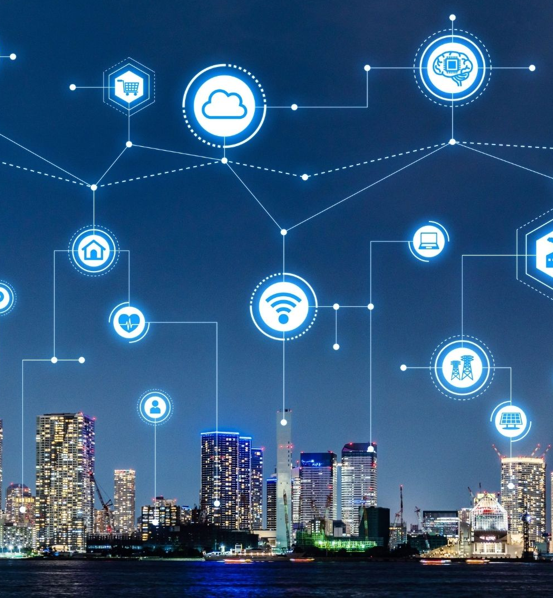

Tipos de telecomunicaciones
Las telecomunicaciones, un campo crucial en la era digital, abarcan una amplia gama de tecnologías y sistemas que permiten la transferencia de información a través de distancias variables. Desde los humildes inicios de la telegrafía hasta la revolución de la comunicación móvil y la conectividad global proporcionada por internet, los avances en telecomunicaciones han transformado radicalmente la forma en que nos comunicamos, trabajamos y vivimos. En esta era de interconexión, diversos tipos de telecomunicaciones desempeñan roles vitales, desde la telefonía tradicional hasta la comunicación inalámbrica, la transmisión de datos por satélite y la emergente Internet de las Cosas (IoT). Explorar estos tipos de telecomunicaciones nos lleva a comprender mejor cómo la tecnología continúa dando forma al mundo moderno y cómo las conexiones que creamos definen nuestra experiencia cotidiana.

Telefonía:
La telefonía es una forma de telecomunicación que permite la transmisión de voz entre dos o más personas a través de dispositivos como teléfonos fijos, móviles o sistemas de VoIP (Voz sobre Protocolo de Internet). Este medio de comunicación ha sido fundamental en la conectividad humana durante más de un siglo y ha experimentado una evolución significativa a lo largo del tiempo.
Telefonía fija: La telefonía fija, también conocida como teléfono de línea terrestre o teléfono fijo, es la forma tradicional de telefonía que utiliza cables de cobre o fibra óptica para conectar los dispositivos a la red telefónica. Aunque su popularidad ha disminuido con la llegada de la telefonía móvil y VoIP, sigue siendo una opción común en muchos hogares y negocios.
Telefonía móvil: La telefonía móvil, también conocida como celular o móvil, permite la comunicación inalámbrica a través de dispositivos móviles como teléfonos inteligentes, tabletas y dispositivos portátiles. Utiliza tecnologías como GSM, CDMA, 4G LTE y 5G para establecer conexiones a través de torres de telefonía celular y antenas.
Internet
Red de redes:
El internet es una red de redes de computadoras interconectadas globalmente que utilizan el protocolo de comunicación TCP/IP (Protocolo de Control de Transmisión/Protocolo de Internet). Está compuesto por una vasta infraestructura de cables submarinos, fibra óptica, satélites y redes inalámbricas que conectan millones de dispositivos en todo el mundo.Protocolos y estándares:
El funcionamiento del internet se basa en una serie de protocolos y estándares, como HTTP (Protocolo de Transferencia de Hipertexto) para la transmisión de páginas web, SMTP (Protocolo Simple de Transferencia de Correo) para el correo electrónico, FTP (Protocolo de Transferencia de Archivos) para la transferencia de archivos, y muchos más.Servicios y aplicaciones:
El internet ofrece una amplia gama de servicios y aplicaciones, incluyendo el correo electrónico, la navegación web, las redes sociales, la transmisión de video y música, las videoconferencias, el comercio electrónico, los servicios de búsqueda, los juegos en línea, y mucho más..Radio
Transmisión de señales electromagnéticas: La radio es un medio de telecomunicación que transmite señales de audio a través de ondas electromagnéticas. Estas ondas viajan a través del aire o del espacio libre y son captadas por antenas receptoras que convierten las señales en sonido.
Tipos de radio:
Hay varios tipos de radio, incluyendo la radio AM (Amplitud Modulada) y la radio FM (Frecuencia Modulada), que se diferencian en la forma en que las señales de audio se modulan en las ondas portadoras.Programación variada:
La radio ofrece una amplia variedad de programación, que incluye música, noticias, deportes, programas de entrevistas, debates, programas educativos, entretenimiento y más. Esta diversidad de contenidos permite a los oyentes encontrar opciones que se ajusten a sus intereses y preferencias.Medio de comunicación en
tiempo real: La radio es un medio de comunicación en tiempo real, lo que significa que la información se transmite instantáneamente a medida que se produce. Esto la hace especialmente útil para la difusión de noticias de última hora, alertas de emergencia y cobertura de eventos en directo.Televivision
Transmisión de señales de audio y video:
La televisión es un medio de telecomunicación que transmite señales de audio y video a través de ondas electromagnéticas o mediante conexiones cableadas. Estas señales son captadas por dispositivos receptores, como televisores, decodificadores o dispositivos de transmisión por internet.Tipos de transmisión:
La televisión puede ser transmitida de varias formas, incluyendo la televisión analógica y la televisión digital. La televisión analógica utiliza señales electromagnéticas continuas para transmitir audio y video, mientras que la televisión digital codifica la información en forma de bits binarios, lo que permite una mayor calidad de imagen y sonido, así como una mayor eficiencia en el uso del espectro electromagnético.Canales y programación:
La televisión ofrece una amplia variedad de canales y programación que abarca diferentes géneros, como noticias, deportes, entretenimiento, documentales, programas educativos, series de ficción, programas infantiles y más. Esta diversidad de contenidos permite a los espectadores encontrar opciones que se ajusten a sus intereses y preferencias.Telegrafia
Transmisión de mensajes mediante pulsos eléctricos: La telegrafía es un método de telecomunicación que permite la transmisión de mensajes a distancia utilizando señales eléctricas. Estos mensajes se codifican en forma de pulsos eléctricos que son transmitidos a través de cables telegráficos.